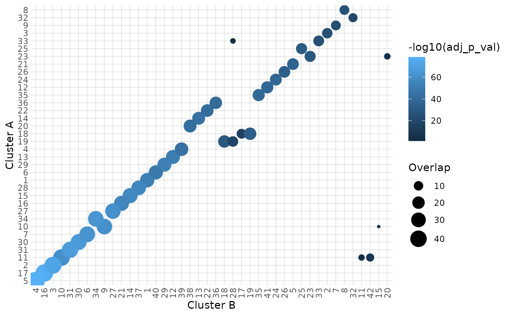
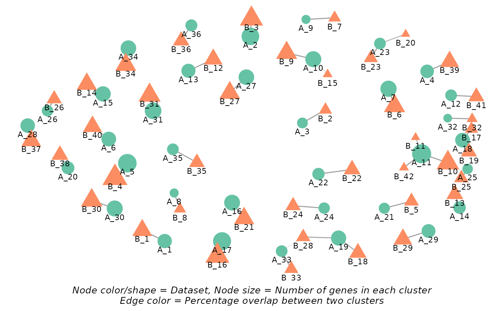

hc_cluster_compare() compares clusters from two AnnDatR objects using a hypergeometric test to assess the significance of overlap between clusters.
Usage
hc_cluster_compare(
AnnDatR_A,
AnnDatR_B,
graph_type = c("bipartite", "optimized")
)Value
A list containing:
matches: A tibble of cluster comparisons with overlap statistics and p-values.
heatmap: A ggplot2 heatmap visualizing cluster overlaps.
match_score (if
graph_typeis "optimized"): A numeric score representing the total normalized overlap percentage.
Details
If graph_type is set to "optimized", the function will run a cluster matching algorithm to ensure no many-to-many matches between clusters, while still allowing one-to-many or many-to-one matches.
The algorithm will:
Filter significant matches based on adjusted p-value threshold (0.05)
Sort matches by overlap size in descending order
Iteratively add matches to the result set, ensuring no many-to-many matches occur.
Calculate a match score representing the total normalized overlap percentage.
Examples
# Run clustering A
adata_res <- hc_pca(example_adata, components = 40)
adata_res <- hc_distance(adata_res, components = 20)
adata_res <- hc_snn(adata_res, neighbors = 15)
#> Building SNN based on a provided distance matrix
#> Computing SNN
adata_res_a <- hc_cluster_consensus(adata_res, resolution = 9)
#> Iteration: 0 *** value: 951.642
#> Iteration: 1 *** value: 198.957
#> Iteration: 2 *** value: 73.707
#> Iteration: 3 *** value: 64.7548
#> Iteration: 4 *** value: 47.8331
#> Iteration: 5 *** value: 47.6047
#> Iteration: 6 *** value: 46.7243
#> Iteration: 7 *** value: 46.1215
#> Iteration: 8 *** value: 46.1215
#> Minimum: 46.1215
#> Joining with `by = join_by(cons_cluster)`
# Run clustering B
adata_res_b <- hc_cluster_consensus(adata_res, resolution = 7)
#> Iteration: 0 *** value: 948.279
#> Iteration: 1 *** value: 70.5063
#> Iteration: 2 *** value: 22.246
#> Iteration: 3 *** value: 22.2447
#> Iteration: 4 *** value: 22.2447
#> Minimum: 22.2447
#> Joining with `by = join_by(cons_cluster)`
# Compare clusters between the two results
hc_cluster_compare(adata_res_a, adata_res_b)
#> 0.00% of genes do not match between the two datasets.
#> Warning: The `size` argument of `element_line()` is deprecated as of ggplot2 3.4.0.
#> ℹ Please use the `linewidth` argument instead.
#> ℹ The deprecated feature was likely used in the HPAclusteR package.
#> Please report the issue at
#> <https://github.com/buenoalvezm/HPAclusteR/issues>.
#> $matches
#> # A tibble: 42 × 8
#> cluster_A cluster_B n_genes_A n_genes_B n_overlap percentage_overlap p_val
#> <chr> <chr> <int> <int> <int> <dbl> <dbl>
#> 1 1 1 36 45 36 100 1.26e-57
#> 2 10 10 19 18 18 100 2.01e-37
#> 3 11 11 28 30 28 100 3.35e-52
#> 4 12 4 21 19 18 94.7 2.67e-34
#> 5 13 13 12 7 7 100 4.66e-15
#> 6 13 3 12 45 4 33.3 1.46e- 3
#> 7 14 16 24 21 21 100 1.92e-40
#> 8 15 18 26 27 26 100 2.50e-50
#> 9 16 19 7 26 4 57.1 1.29e- 5
#> 10 16 27 7 33 2 28.6 2.07e- 2
#> # ℹ 32 more rows
#> # ℹ 1 more variable: adj_p_val <dbl>
#>
#> $heatmap

#>
#> $network

#>